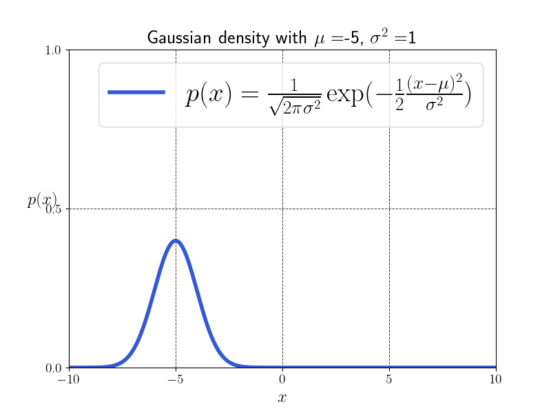
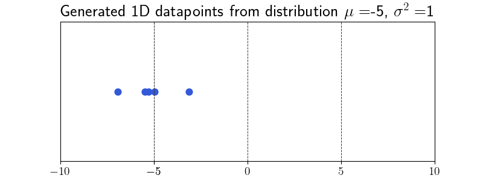

(Optimal) Coupliing of measures
Hannah Louisa Boldt h.boldt@campus.tu-berlin.de
June 4th 2026, TU Berlin
Contents
- Recap: Total Variation Norm
- Probability Measures and examples
- Push-forward measures and laws of random variables
- Wasserstein distance and optimal couplings
- Couplings from maps and Brenier's theorem
- Distance between Gaussian measures
- Summary and outlook
Recap: Total Variation Norm
Let $\mathcal{M}(\mathbb{R}^d)$ be the Banach space of signed
$\sigma$-additive Borel measures on $\mathbb{R}^d$.
\[
\|\mu\|_{TV} := |\mu|(\mathbb{R}^d)
\]
where
\[
|\mu|(A)
:=
\sup_{A=\cup_k A_k}
\sum_k |\mu(A_k)|,
\qquad
A_i \cap A_j = \emptyset .
\]
Recap: Total Variation Norm
Is the cross measure or triangle measure nearer to dot measure?
TV of Probability measures is always 2, but intuitively the cross measure should be closer to the dot measure. (check on board)
Recap: TV Norm and test functions
So wee look at
$\mathcal{M}\left(\mathbb{R}^d\right)$ is dual space of $C_0\left(\mathbb{R}^d\right)$, i.e. $C_0\left(\mathbb{R}^d\right)^{\prime}=\mathcal{M}\left(\mathbb{R}^d\right)$ (since $C_c^{\infty}\left(\mathbb{R}^d\right)$ is dense in $C_0\left(\mathbb{R}^d\right)$ we could also test against the first ones)
$$
\|\mu\|_{T V}=\sup _{\|\varphi\|_{\infty} \leq 1}|\langle\varphi, \mu\rangle|, \quad\langle x, \mu\rangle:=\int_{\mathbb{R}^d} \varphi(x) \mathrm{d} \mu(x)
$$
and $\left(\mu_n\right)_n$ converges weak-* to a measure $\mu$ if
$$
\lim _{n \rightarrow \infty} \int \varphi \mathrm{~d} \mu_n=\int \varphi \mathrm{d} \mu \text { for all } \varphi \in C_0\left(\mathbb{R}^d\right)
$$
- $\mathcal{P}\left(\mathbb{R}^d\right)$ set of probability measures on $\mathbb{R}^d$
\begin{enumerate}
\item probability measures $\left(\mu_n\right)_n$ does in general not weak-* converge a probability measure e.g. $\mu_n=\delta_n$ converges weak-* to $\mu \equiv 0$
\item
- probability measures $\left(\mu_n\right)_n$ converges narrowly to a (probability) measure $\mu$ if
$$
\lim _{n \rightarrow \infty} \int \varphi \mathrm{~d} \mu_n=\int \varphi \mathrm{d} \mu \text { for all } \varphi \in C_b\left(\mathbb{R}^d\right)
$$
\item
- TV-distance $\|\mu-\nu\|$ between $\mu, \nu \in \mathcal{P}\left(\mathbb{R}^d\right)$ with disjoint support is always 2 so need another distance!
Recap: Total Variation Norm
Push-Forward Measures
Let $T: \mathbb{R}^d \rightarrow \mathbb{R}^n, \mu \in \mathcal{P}_2\left(\mathbb{R}^d\right)$ be a Borel-measurable map.
Then the push-forward measure of $\mu$ by $T$ is the measure $\nu \in \mathcal{P}_2\left(\mathbb{R}^d\right)$ defined by
$$
\nu=T_{\#} \mu=\mu \circ T^{-1}
$$
with the preimage $T^{-1}(B)$ of $B \in \mathcal{B}\left(\mathbb{R}^n\right)$.
A Map $f: \mathbb{R}^n \rightarrow \mathbb{R}$ is integrable with respect to $T_{\#} \mu$ if $f \circ T$ is integrable with respect to $\mu$ and
$$
\int_{\mathbb{R}^n} f(y) \mathrm{d} T_{\#} \mu(y)=\int_{T^{-1}\left(\mathbb{R}^n\right)} f(T(x)) \mathrm{d} \mu(x) .
$$
Also if the map $T: \mathbb{R}^d \rightarrow \mathbb{R}^d$ is a $C^1$ diffeomorphism and $\mu$ has density $p_\mu$, then
$$
\int f(y) \mathrm{d} T_{\# \mu}(y)=\int f(T(x)) p_\mu(x) \mathrm{d} x=\int f(y) \underbrace{p_\mu\left(T^{-1}(y)\right)\left| \operatorname{det}\left(\nabla T^{-1}(y)\right)\right|}_{p_{T_{\#\mu}}} \mathrm{d} y.
$$
Let $(\Omega, \mathcal{A}, \mathbb{P})$ be a probability space and $X: \Omega \rightarrow \mathbb{R}^d$ random variable, then we call $\mu_X=X_{\sharp} \mathbb{P}$ \textbf{law of $X$}
Examples: Probability Measures
Probability measures are maps
\[
\mu : \mathcal{B}(\mathbb{R}^d) \to [0,\infty),
\qquad
\mu(\mathbb{R}^d)=1 .
\]
We denote the space by \(\mathcal{P}(\mathbb{R}^d)\).
It is convex, but not linear.
For \(\lambda \in [0,1]\),
\[
(1-\lambda)\mu + \lambda \nu
\]
is again a probability measure.
Examples:
-
Dirac measures \(\delta_x\), \(x\in\mathbb{R}^d\):
\[
\delta_x(\{x\})=1,
\qquad
\delta_x(\mathbb{R}^d\setminus\{x\})=0 .
\]
-
Convex combinations of Dirac measures.
-
Gaussian measures:
\[
\mu(A)
:=
\int_A
\frac{1}{(2\pi\sigma^2)^{d/2}}
e^{-\frac{|x|^2}{2\sigma^2}}
\,dx .
\]
Probability measures can be visualized through samples/realizations.
Example: Samples of Dirac measure
Example: Samples of 2 D Gaussian measure
Sample of Gaussian distribution


Plot below shows 3 datapoints sampled from the distribution
Calculate distance between dirac measures
TV norm between two dirac measures $\delta_x$ and $\delta_y$ is always 2
Calculate distance between dirac measures
TV norm between two dirac measures $\delta_x$ and $\delta_y$ is always 2
Wasserstein Distance
The Space $(X, d)=\left(\mathcal{P}_2\left(\mathbb{R}^d\right), W_2\right)$
$$
\mathcal{P}_2\left(\mathbb{R}^d\right):=\left\{\mu \in \mathcal{P}\left(\mathbb{R}^d\right): \int_{\mathbb{R}^d}\|x\|_2^2 \mathrm{~d} \mu(x)<\infty\right\}
$$
\blue
The term inside the Integral is also called second moment (TODO check definiton).
TV norm is shit because 1 + 1 = 2 so we work with
\black
the Wasserstein distance
$$
W_2^2(\mu, \nu):=\min _{\pi \in \Pi(\mu, \nu)} \int_{\mathbb{R}^d \times \mathbb{R}^d}\|x-y\|_2^2 \mathrm{~d} \pi(x, y)
$$
$\mathcal{P}_2\left(\mathbb{R}^d\right)$ becomes a complete metric space, where $\pi \in \mathcal{P}\left(\mathbb{R}^d \times \mathbb{R}^d\right)$ is a coupling from
$$
\Pi(\mu, \nu):=\left\{\pi \in \mathcal{P}\left(\mathbb{R}^d \times \mathbb{R}^d\right):\left(P_1\right)_{\#} \pi=\mu,\left(P_2\right)_{\#} \pi=\nu\right\}
\quad \textbf{Couplings of $\mu$ and $\nu$}
$$
where $P^1: \mathbb{R}^d \times \mathbb{R}^d \rightarrow \mathbb{R}^d, \quad P^1(x, y)=x$.
Lets look at examples of couplings and then calculate their Wasserstein distance!
1. Independent couplings 2. Optimal couplings 3. Couplings from maps
Setting
We have two combinations of diracs
Independent Coupling
We have two combinations of diracs
Optimal Coupling
We have two combinations of diracs.
Find Minimizer of Wasserstein distance!
Calculate Wasserstein Distance of Diracs
We have two combinations of diracs.
Find Minimizer of Wasserstein distance!
Calculate Wasserstein Distance of Diracs
In this simple case a minimizer can be explicitly calculated by
Under certain conditions the optimal coupling is unique! (Brenier)
Couplings from Maps
Optimal couplings vs. optimal transport maps
the difference is that optimal couplings are more general than optimal transport maps, since not every coupling can be written as a map.
Couplings from Maps
Optimal couplings vs. optimal transport maps
Example: $\mu=\frac{1}{2}\left(\delta_{-1}+\delta_1\right), \nu=\delta_0$ then the optimal coupling is not unique and can not be written as a map, since we have to split the mass of $\delta_0$ to transport it to $\delta_{-1}$ and $\delta_1$. todo check
Brenier's Theorem
\textbf{Theorem (Brenier)} Let $\mu \in \mathcal{P}_2\left(\mathbb{R}^d\right)$, where $\mu \ll \lambda$. Then
\begin{enumerate}
\item the optimal coupling $\pi$ is unique
\item it can be written as $\pi=(I, T)_{\# \mu}$, where $(I, T): \mathbb{R}^d \rightarrow \mathbb{R}^d \times \mathbb{R}^d, x \mapsto(x, T(x)) T \in L_\mu^2\left(\mathbb{R}^d, \mathbb{R}^d\right)$ is the optimal transport map, i.e. fulfills
$$
W_2^2(\mu, \nu)=\int_{\mathbb{R}^d}\|x-T(x)\|^2 \mathrm{~d} \mu(x) \quad \text { subject to } \quad \nu=T_{\# \mu}
$$
\item
It holds
$$
T(x)=\nabla \psi(x) \text { for } \mu-\text { a.e. } x \text {, }
$$
for some lower semi-continuous, convex, differentiable function $\psi: \mathbb{R}^d \rightarrow \mathbb{R}^3$ (Brenier potential).
\item
Conversely, if $\psi$ is lower semi-continuous, convex and differentiable $\mu$-a.e. with $\nabla \psi \in L_\mu^2\left(\mathbb{R}^d, \mathbb{R}^d\right)$, then
$$
T=\nabla \psi
$$
is the optimal transport map from $\mu$ to $\nu=T_{\#} \mu \in \mathcal{P}_2\left(\mathbb{R}^d\right)$.
Brenier's Theorem
consequences
Distance between Gaussians (todo cite peyre)
For two Gaussians
$$
\mu=\mathcal{N}\left(m_\mu, \Sigma_\mu\right), \quad \nu=\mathcal{N}\left(m_\nu, \Sigma_\nu\right)
$$
where $\mathcal{N}(m, \Sigma)$ has the density
$$
p(x):=(2 \pi)^{-\frac{d}{2}}(\operatorname{det} \Sigma)^{-\frac{1}{2}} \mathrm{e}^{-\frac{1}{2}(x-m)^{\top} \Sigma^{-1}(x-m)},
$$
the optimal transport map is given by
$$
\begin{gathered}
T(x)=m_\nu+A\left(x-m_\mu\right), \quad A:=\Sigma_\mu^{-\frac{1}{2}}\left(\Sigma_\mu^{\frac{1}{2}} \Sigma_\nu \Sigma_\mu^{\frac{1}{2}}\right)^{\frac{1}{2}} \Sigma_\mu^{-\frac{1}{2}} \\
W_2^2(\mu, \nu)=\int\|x-T(x)\|^2 \mathrm{~d} x=
\end{gathered}
$$
Distance between Gaussians (todo cite peyre)
For two Gaussians
$\mathcal{N}\left(\mathbf{m}_\beta, \boldsymbol{\Sigma}_\beta\right)$ are two Gaussians in $\mathbb{R}^d$, then one can show that the following map
$$
\begin{equation*}
T: x \mapsto \mathbf{m}_\beta+A\left(x-\mathbf{m}_\alpha\right), \tag{2.40}
\end{equation*}
$$
where
$$
A=\boldsymbol{\Sigma}_\alpha^{-\frac{1}{2}}\left(\boldsymbol{\Sigma}_\alpha^{\frac{1}{2}} \boldsymbol{\Sigma}_\beta \boldsymbol{\Sigma}_\alpha^{\frac{1}{2}}\right)^{\frac{1}{2}} \boldsymbol{\Sigma}_\alpha^{-\frac{1}{2}}=A^{\mathrm{T}}
$$
is such that $T_{\sharp} \rho_\alpha=\rho_\beta$. Indeed, one simply has to notice that the change of variables formula (2.8) is satisfied since
$$
\begin{aligned}
\rho_\beta(T(x)) & =\operatorname{det}\left(2 \pi \boldsymbol{\Sigma}_\beta\right)^{-\frac{1}{2}} \exp \left(-\left\langle T(x)-\mathbf{m}_\beta, \boldsymbol{\Sigma}_\beta^{-1}\left(T(x)-\mathbf{m}_\beta\right)\right\rangle\right) \\
& =\operatorname{det}\left(2 \pi \boldsymbol{\Sigma}_\beta\right)^{-\frac{1}{2}} \exp \left(-\left\langle x-\mathbf{m}_\alpha, A^{\mathrm{T}} \boldsymbol{\Sigma}_\beta^{-1} A\left(x-\mathbf{m}_\alpha\right)\right\rangle\right) \\
& =\operatorname{det}\left(2 \pi \boldsymbol{\Sigma}_\beta\right)^{-\frac{1}{2}} \exp \left(-\left\langle x-\mathbf{m}_\alpha, \boldsymbol{\Sigma}_\alpha^{-1}\left(x-\mathbf{m}_\alpha\right)\right\rangle\right)
\end{aligned}
$$
and since $T$ is a linear map we have that
$$
\left|\operatorname{det} T^{\prime}(x)\right|=\operatorname{det} A=\left(\frac{\operatorname{det} \boldsymbol{\Sigma}_\beta}{\operatorname{det} \boldsymbol{\Sigma}_\alpha}\right)^{\frac{1}{2}}
$$
and we therefore recover $\rho_\alpha=\left|\operatorname{det} T^{\prime}\right| \rho_\beta$ meaning $T_{\sharp} \alpha=\beta$. Notice now that $T$ is the gradient of the convex function $\psi: x \mapsto \frac{1}{2}\left\langle x-\mathbf{m}_\alpha, A\left(x-\mathbf{m}_\alpha\right)\right\rangle+\left\langle\mathbf{m}_\beta, x\right\rangle$ to conclude, using Brenier's theorem [1991] (see Remark 2.24), that $T$ is optimal.
Distance between Gaussians (todo cite peyre)
For two Gaussians
Both that map $T$ and the corresponding potential $\psi$ are illustrated in Figures 2.12 and 2.13
With additional calculations involving first and second order moments of $\rho_\alpha$, we obtain that the transport cost of that map is
$$
\begin{equation*}
\mathcal{W}_2^2(\alpha, \beta)=\left\|\mathbf{m}_\alpha-\mathbf{m}_\beta\right\|^2+\mathcal{B}\left(\boldsymbol{\Sigma}_\alpha, \boldsymbol{\Sigma}_\beta\right)^2, \tag{2.41}
\end{equation*}
$$
where $\mathcal{B}$ is the so-called Bures metric [1969] between positive definite matrices (see also Forrester and Kieburg [2016]),
$$
\begin{equation*}
\mathcal{B}\left(\boldsymbol{\Sigma}_\alpha, \boldsymbol{\Sigma}_\beta\right)^2 \stackrel{\text { def. }}{=} \operatorname{tr}\left(\boldsymbol{\Sigma}_\alpha+\boldsymbol{\Sigma}_\beta-2\left(\boldsymbol{\Sigma}_\alpha^{1 / 2} \boldsymbol{\Sigma}_\beta \boldsymbol{\Sigma}_\alpha^{1 / 2}\right)^{1 / 2}\right), \tag{2.42}
\end{equation*}
$$
where $\boldsymbol{\Sigma}^{1 / 2}$ is the matrix square root. One can show that $\mathcal{B}$ is a distance on covariance matrices and that $\mathcal{B}^2$ is convex with respect to both its arguments. In the case where $\boldsymbol{\Sigma}_\alpha=\operatorname{diag}\left(r_i\right)_i$ and $\boldsymbol{\Sigma}_\beta=\operatorname{diag}\left(s_i\right)_i$ are diagonals, the Bures metric is the Hellinger distance
$$
\mathcal{B}\left(\boldsymbol{\Sigma}_\alpha, \boldsymbol{\Sigma}_\beta\right)=\|\sqrt{r}-\sqrt{s}\|_2 .
$$
For 1-D Gaussians, $\mathcal{W}_2$ is thus the Euclidean distance on the 2-D plane plotting the mean and the standard deviation of a Gaussian $(\mathbf{m}, \sqrt{\boldsymbol{\Sigma}})$, as illustrated in Figure 2.14. For a detailed treatment of the Wasserstein geometry of Gaussian distributions, we refer to Takatsu [2011], and for additional considerations on the Bures metric the reader can consult the very recent references [Malagò et al., 2018, Bhatia et al., 2018]. One can also consult [Muzellec and Cuturi, 2018] for a a recent application of this metric to compute probabilistic embeddings for words, [Shafieezadeh Abadeh et al., 2018] to see how it is used to compute a robust extension to Kalman filtering, or [Mallasto and Feragen, 2017] in which it is applied to covariance functions in reproducing kernel Hilbert spaces.
Distance between Gaussians (todo cite peyre)
Visualization of what we calculated